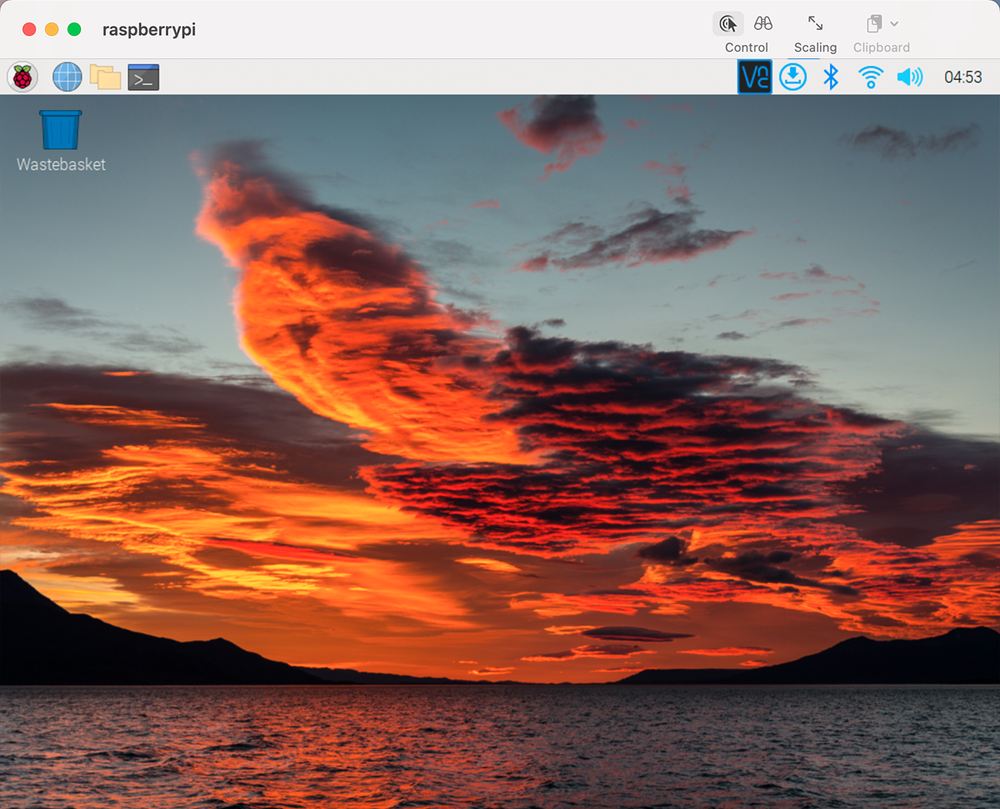

Note
Hello, welcome to the SunFounder Raspberry Pi & Arduino & ESP32 Enthusiasts Community on Facebook! Dive deeper into Raspberry Pi, Arduino, and ESP32 with fellow enthusiasts.
Why Join?
Expert Support: Solve post-sale issues and technical challenges with help from our community and team.
Learn & Share: Exchange tips and tutorials to enhance your skills.
Exclusive Previews: Get early access to new product announcements and sneak peeks.
Special Discounts: Enjoy exclusive discounts on our newest products.
Festive Promotions and Giveaways: Take part in giveaways and holiday promotions.
👉 Ready to explore and create with us? Click [here] and join today!
Mac OS X user
For Mac users, accessing the Raspberry Pi desktop directly via VNC is more convenient than from the command line. You can access it via Finder by entering the set account password after enabling VNC on the Raspberry Pi side.
Note that this method does not encrypt communication between the Mac and Raspberry Pi. The communication will take place within your home or business network, so even if it’s unprotected, it won’t be an issue. However, if you are concerned about it, you can install a VNC application such as VNC® Viewer.
Alternatively it would be handy if you could use a temporary monitor (TV), mouse and keyboard to open the Raspberry Pi desktop directly to set up VNC. If not, it doesn’t matter, you can also use the SSH command to open the Raspberry Pi’s Bash shell and then using the command to set up the VNC.
Have Temporarily Monitor (or TV)?
Connect a monitor (or TV), mouse and keyboard to the Raspberry Pi and power it on. Select the menu according to the numbers in the figure.

The following screen will be displayed. Set VNC to Enabled on the Interfaces tab, and click OK.

A VNC icon appears on the upper right of the screen and the VNC server starts.

Open the VNC server window by clicking on the VNC icon, then click on the Menu button in the top right corner and select Options.

You will be presented with the following screen where you can change the options.

Set Encryption to Prefer off and Authentication to VNC password.
When you click the OK button, the password input screen is displayed. You can use the same password as the Raspberry pi password or a different password, so enter it and click OK.

You are now ready to connect from your Mac. It’s okay to disconnect the monitor.
From here, it will be the operation on the Mac side.
Now, select Connect to Server from the Finder’s menu, which you can open by right-clicking.

Type in
vnc://<username>@<hostname>.local(orvnc://<username>@<IP address>). After entering, click Connect.
You will be asked for a password, so please enter it.

The desktop of the Raspberry pi will be displayed, and you will be able to operate it from the Mac as it is.

Don’t Have Temporarily Monitor (or TV)?
You can apply the SSH command to open the Raspberry Pi’s Bash shell.
Bash is the standard default shell for Linux.
The shell itself is a command (instruction) when the user uses Unix/Linux.
Most of what you need to do can be done through the shell.
After setting up the Raspberry pi side, you can access the desktop of the Raspberry Pi using the Finder from the Mac.
Type
ssh <username>@<hostname>.localto connect to the Raspberry Pi.ssh pi@raspberrypi.local
The following message will be displayed only when you log in for the first time, so enter yes.
The authenticity of host 'raspberrypi.local (2400:2410:2101:5800:635b:f0b6:2662:8cba)' can't be established. ED25519 key fingerprint is SHA256:oo7x3ZSgAo032wD1tE8eW0fFM/kmewIvRwkBys6XRwg. This key is not known by any other names Are you sure you want to continue connecting (yes/no/[fingerprint])?
Enter the password for the Raspberry pi. The password you enter will not be displayed, so be careful not to make a mistake.
pi@raspberrypi.local's password: Linux raspberrypi 5.15.61-v8+ #1579 SMP PREEMPT Fri Aug 26 11:16:44 BST 2022 aarch64 The programs included with the Debian GNU/Linux system are free software; the exact distribution terms for each program are described in the individual files in /usr/share/doc/*/copyright. Debian GNU/Linux comes with ABSOLUTELY NO WARRANTY, to the extent permitted by applicable law. Last login: Thu Sep 22 12:18:22 2022 pi@raspberrypi:~ $
Set up your Raspberry Pi so that you can log in via VNC from your Mac once you have successfully logged into it. The first step is to update your operating system by running the following commands.
sudo apt update sudo apt upgrade
Do you want to continue? [Y/n], EnterYwhen prompted.It may take some time for the update to finish. (It depends on the amount of updates at that time.)
Enter the following command to enable the VNC Server.
sudo raspi-configThe following screen will be displayed. Select 3 Interface Options with the arrow keys on the keyboard and press the Enter key.

Then select P3 VNC.

Use the arrow keys on the keyboard to select <Yes> -> <OK> -> <Finish> to complete the setup.

Now that the VNC server has started, let’s change the settings for connecting from a Mac.
To specify parameters for all programs for all user accounts on the computer, create
/etc/vnc/config.d/common.custom.sudo nano /etc/vnc/config.d/common.custom
After entering
Authentication=VncAuthenter, pressCtrl+X->Y->Enterto save and exit.
In addition, set a password for logging in via VNC from a Mac. You can use the same password as the Raspberry pi password or a different password.
sudo vncpasswd -service
Once the setup is complete, restart the Raspberry Pi to apply the changes.
sudo sudo reboot
Now, select Connect to Server from the Finder’s menu, which you can open by right-clicking.
Type in
vnc://<username>@<hostname>.local(orvnc://<username>@<IP address>). After entering, click Connect.
You will be asked for a password, so please enter it.
The desktop of the Raspberry pi will be displayed, and you will be able to operate it from the Mac as it is.